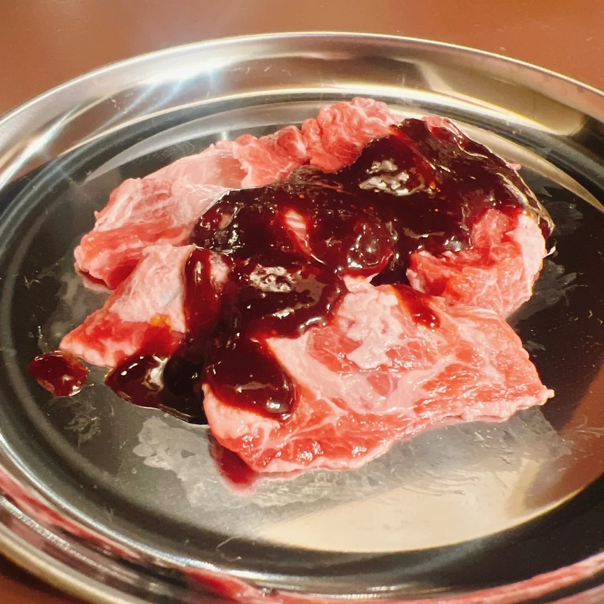
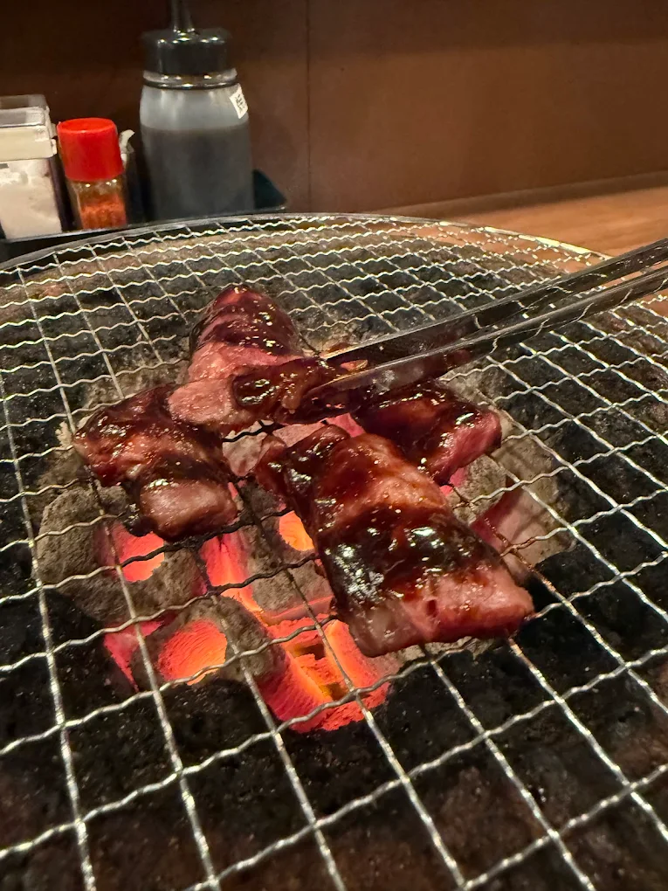
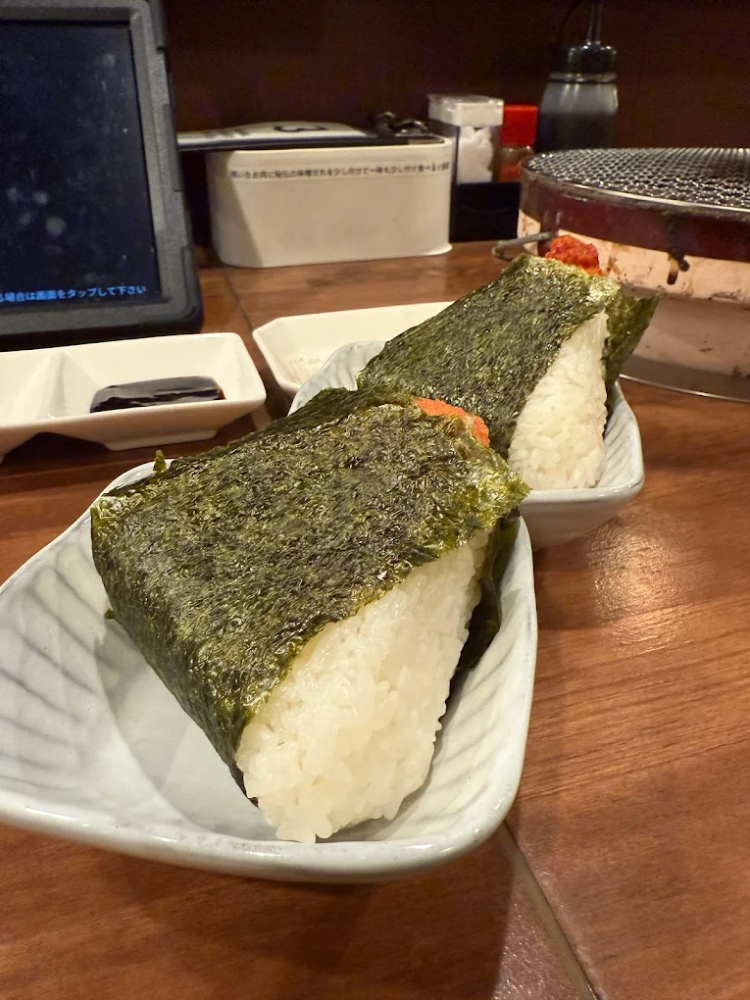

「炭火焼肉とんちゃんけんちゃん」
名古屋市東区泉
※高岡駅から徒歩4分



Googleマップの評価「星４.３」
七輪に吸煙機搭載のとんちゃん一皿１００円の脅威の焼肉店
とんちゃんが名物の焼肉店で、とんちゃん一皿１００円は価格崩壊の一言、飲み放題もあるので、安く肉と酒を楽しみたいのならおすすめの一店だ。
格安焼肉では珍しく炭を焚いた七輪をテーブルに乗せるスタイルであり、さらに席に天井には吸煙機が付いている。これには焼肉で衣類に臭いが付くのが気になる人もニッコリ。本格焼肉店と比べて豪華な肉があるわけではないものの、値段を気にせずにとんちゃんを注文できるのは魅力的だ。とんちゃんに使われている味噌タレは各テーブルに設置されていて、追いタレに使うのも焼いた肉をご飯の上に乗せて味噌タレをかけて焼肉丼にするのもよし。
１００円とんちゃんが食べたい人は行ってみよう。
「店舗所在地」
| 住所 | 〒461-0001 愛知県名古屋市東区泉２丁目１３−１５ |
|---|---|
| TEL | 052-932-1011 |
| URL | https://tonchan-kenchan.com/ |